Inspiring, educating, and impacting the community through engaging science-based programs and exhibits.
Currently in development at the Discovery Cube Museum, the Macroverse will be a seasonal summer exhibit where visitors get “shrunken” down to the size of a lizard and enter a science lab full of different challenges. With funding from Lilly Grant initiatives backing the exhibit, visitors are challenged to practice four core character traits while inside this immersive, oversized science environment:
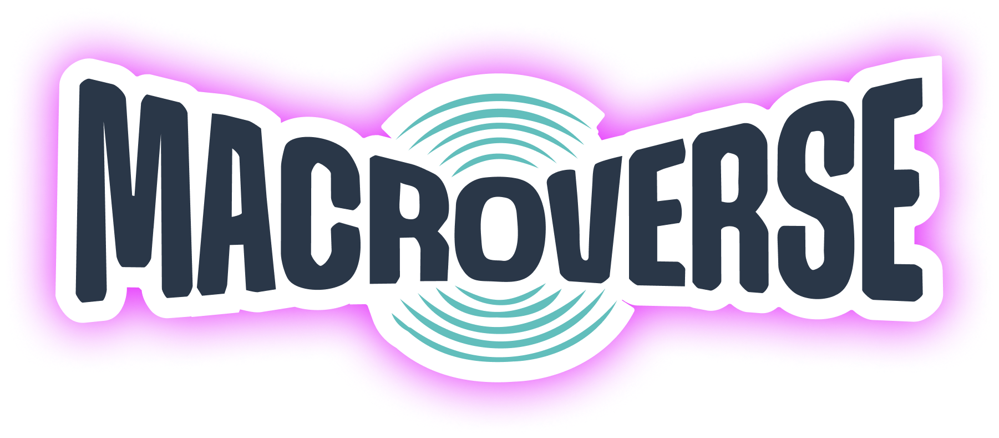
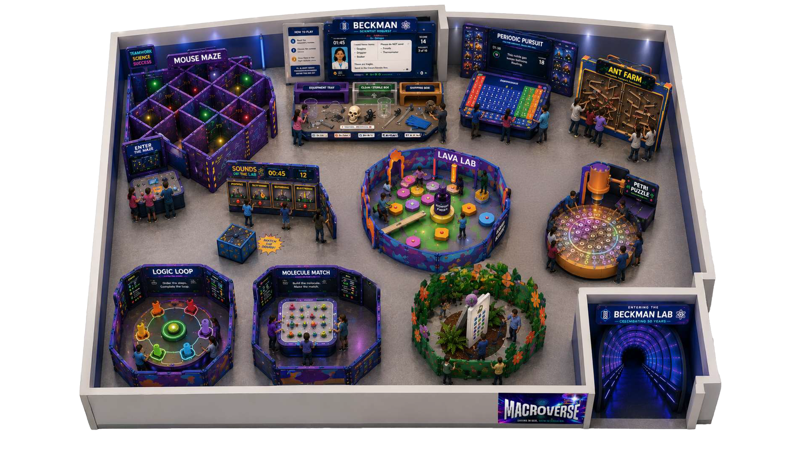
Objectives
The Discovery Cube team had a couple of initial project goals for us:
Develop a clear, end-to-end storyboard for the Macroverse experience.
Define game-level interaction flows that spell out what happens before and after each game including: game check-in, how-to-play instructions, science explanation/reflection after play.
Discovery
While we had a clear project goal from our partners, we still had to figure out how we were going to achieve it. So, we put together a research plan to dive into our first course of action. Since the Macroverse will target school-aged children between 6 and 12, we set off to learn what kinds of things encourage engagement and also what helps learning “stick” for this group.
Getting into the mindset - Workshop
As we moved into identifying our users’ needs, I wanted to align everyone on what what this actually meant—what makes an 8 year old tick? From our youngest team member to our oldest partner, the age difference was over a decade; we were going to need some alignment here.
I came up with a 3-part Figjam workshop called “Build Your 8 Y.O. Self,” where you could embody a hybrid persona of your core personality and whatever you could remember from when you were 8 years old. The workshop would take place during our weekly team meetings so each part had to fit within a 1-hr time slot.
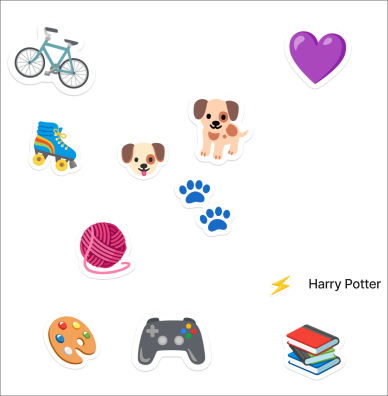
Using the stamp tool, stamp in emojis, shapes, colors, or words that represent your 8 y.o. self.
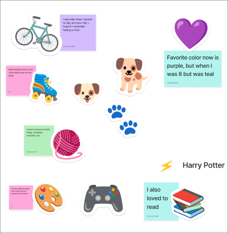
After presentations, everyone would “steal three things” from someone else’s board. This told us what types of things resonated with each other and also started to surface commonalities.
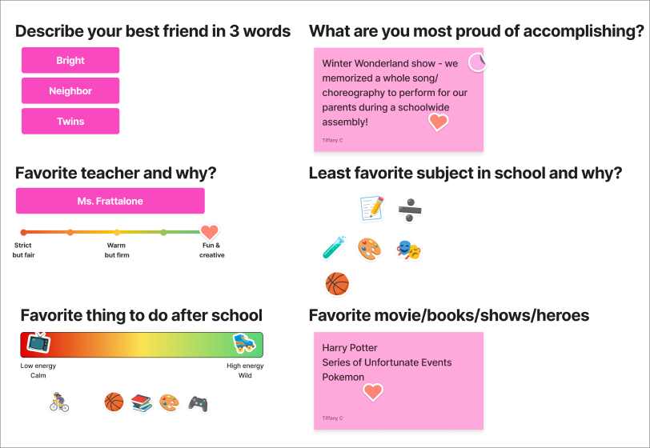
This next part dove a little deeper into more specific goalposts of our youth.
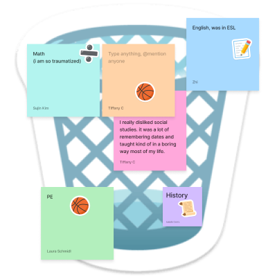
For impact (and for fun), everyone chose their least favorite subjects and tossed them in the trash.
Have fun, learn lots of things, and look for the helpers!
It’s so fun! You get to play games with people and meet so many friends!
Have fun, go crazy!! There’s no boundaries to exploring! Wash your hands after!
When you’re in there and try EVERYTHING !!! touch everything, tap everything (dont eat anything) (dont lick anything dont be gross), but do what you feel like !!
“Take chances, make mistakes, and get messy!” - Ms. Frizzle
+1You can play as many times as you want and go back and improve your score. You can bring your friends and do it together or by yourself! You will be so good at this!
+1Insights
Engagement thrives when challenges are reframed to feel achievable and failure is treated as part of the learning process rather than a competitive loss.
Students tend to care more when they feel ownership over the outcomes and peer collaboration helps to build that independence.
A safe, flexible environment builds students’ confidence and quick interactive activities help capture their attention.
Objective
How might we create a more cohesive experience that clearly connects gameplay to the Macroverse’s character-building mission?
Prototyping & Testing
After receiving their RFPs back from vendors, our Discovery Cube partners ran into some obstacles that changed the trajectory of our designs. With a newly strategized budget, combined with our research and their own user testing, the Discovery Cube team decided to pivot, consolidating and reframing the original touchpoints.
Our new flows:
Testing
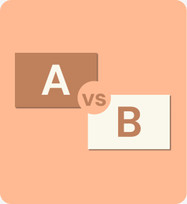
A/B Testing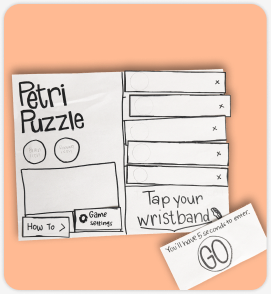
Prototype Simulation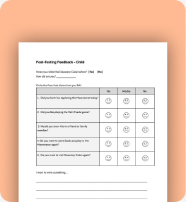
Post-test SurveysDiscovery Cube was gracious enough to allow us to use their facilities. This gave us access to a conference room large enough to simulate a mock Macroverse as well as the museum visitors who were willing to help us out.
High Fidelity Prototype
Based on the results from A/B testing, we consolidated into one, main flow.
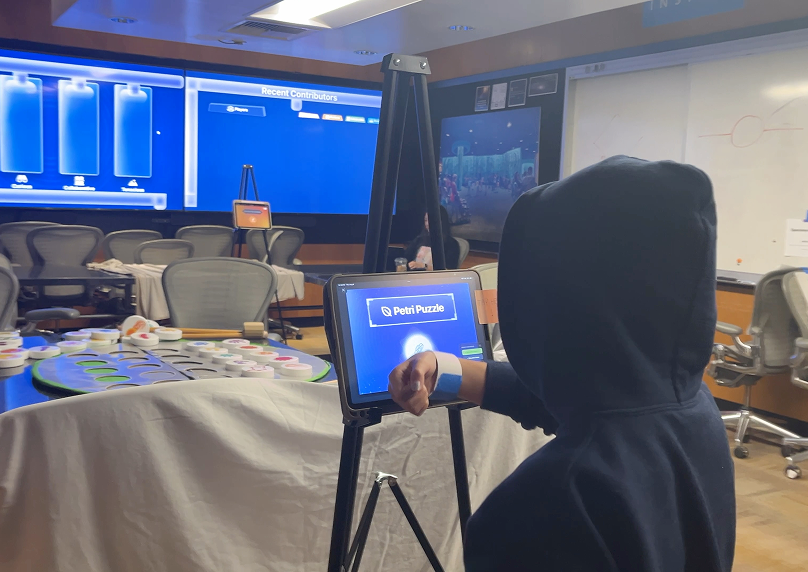
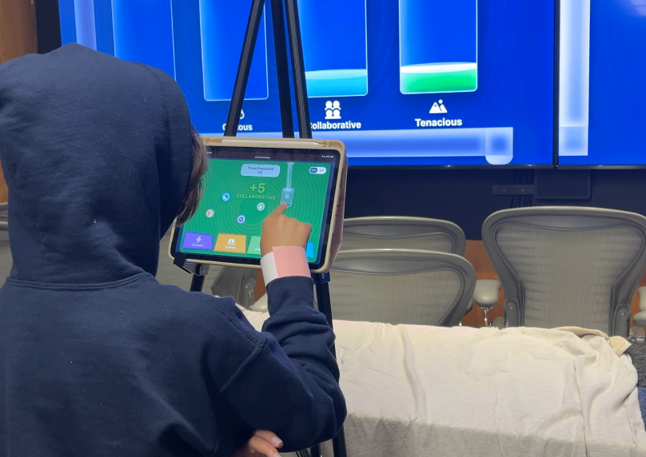
Key Considerations
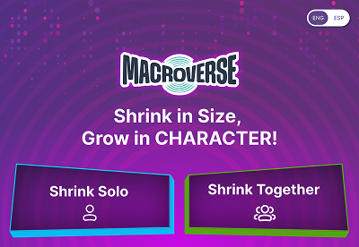
Exhibit Onboarding
- Solo vs. group onboarding — keep because friction makes parents more likely to get involved
- Test out CTAs to see which are most clear to target age
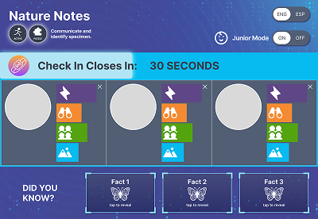
Game Check-in
- Clickable elements need to be CLEARLY clickable via appearance, animation helps
- Once kids find out they can do something, they know to look for it in next instance
- CTAs also need revisiting/testing
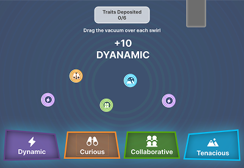
Contribution Kiosk
- Insert micro-interactions to bring more attention to character trait point collection
- Use physical environment to draw attention to these kiosks
Delivery
Since the Macroverse will not be opening at Discovery Cube until Summer of 2027, we wanted to provide a deliverable that was a bit more dynamic than just a bunch of UI screens. With all of the research we gathered to inform our design decisions, we decided to create an “interactive design system” for our partners. This design system would outline the insights we drew from our data and show our rationale/logic for things like the specific words we chose or the placement of certain components.
There is a lot of time between now and next summer, which means there is plenty of opportunity for change and more unexpected pivots. This guide could act as a foundational starting point that the future designer can use and update as they see appropriate. For further ease of use, we broke the design system into two parts: a visual style guide and an annotated guide. One is more documentation-focused while the other is a more visual representation of our rationale specific to the screens we designed and tested with.